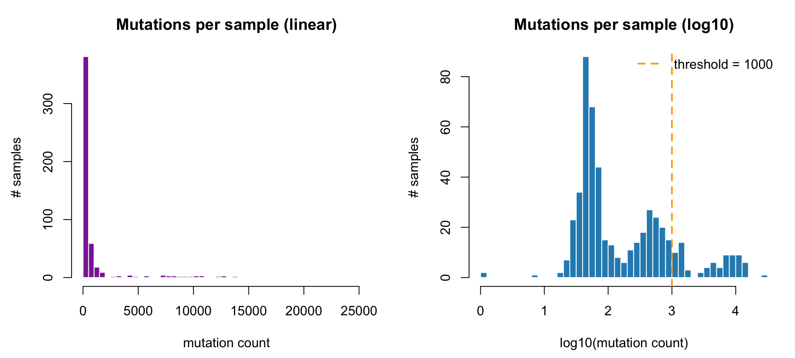

Last updated: 2026-07-13
Checks: 6 1
Knit directory: diffdriver-analysis/
This reproducible R Markdown analysis was created with workflowr (version 1.7.1). The Checks tab describes the reproducibility checks that were applied when the results were created. The Past versions tab lists the development history.
The R Markdown is untracked by Git. To know which version of the R
Markdown file created these results, you’ll want to first commit it to
the Git repo. If you’re still working on the analysis, you can ignore
this warning. When you’re finished, you can run
wflow_publish to commit the R Markdown file and build the
HTML.
Great job! The global environment was empty. Objects defined in the global environment can affect the analysis in your R Markdown file in unknown ways. For reproduciblity it’s best to always run the code in an empty environment.
The command set.seed(20250319) was run prior to running
the code in the R Markdown file. Setting a seed ensures that any results
that rely on randomness, e.g. subsampling or permutations, are
reproducible.
Great job! Recording the operating system, R version, and package versions is critical for reproducibility.
Nice! There were no cached chunks for this analysis, so you can be confident that you successfully produced the results during this run.
Great job! Using relative paths to the files within your workflowr project makes it easier to run your code on other machines.
Great! You are using Git for version control. Tracking code development and connecting the code version to the results is critical for reproducibility.
The results in this page were generated with repository version 276ec2a. See the Past versions tab to see a history of the changes made to the R Markdown and HTML files.
Note that you need to be careful to ensure that all relevant files for
the analysis have been committed to Git prior to generating the results
(you can use wflow_publish or
wflow_git_commit). workflowr only checks the R Markdown
file, but you know if there are other scripts or data files that it
depends on. Below is the status of the Git repository when the results
were generated:
Untracked files:
Untracked: analysis/UCEC_hypermutator.Rmd
Untracked: analysis/img/
Untracked: data/UCEC_cbio_Hypermutator_withdir.txt
Untracked: data/ucec_mut_counts.tsv
Unstaged changes:
Modified: analysis/index.Rmd
Note that any generated files, e.g. HTML, png, CSS, etc., are not included in this status report because it is ok for generated content to have uncommitted changes.
There are no past versions. Publish this analysis with
wflow_publish() to start tracking its development.
This analysis runs diffdriver on TCGA uterine corpus endometrial carcinoma (UCEC) to test, for a panel of UCEC driver genes, whether the strength of positive selection differs between hypermutated and low-mutation-burden tumors, adjusting for age.
BMRmode = "signature", k = 6, 96 nucleotide
types).Data were pulled from the cBioPortal REST API, study
ucec_tcga_pan_can_atlas_2018 (TCGA UCEC,
PanCancer Atlas), restricted to whole-exome-sequenced
(WES), GRCh37/hg19 samples (517 WES samples;
WES filtering via each sample’s gene panel).
POST /molecular-profiles/ucec_tcga_pan_can_atlas_2018_mutations/mutations/fetch
(batched over samples because POLE ultramutators carry tens of thousands
of mutations), restricted to SNVs and de-duplicated → 512,971 SNVs
across 515 samples.MUTATION_COUNT clinical attribute), thresholded at
1,000.AGE).UCECgenes.txt (40 genes)
with POLE and POLD1 appended.Outputs are on Discovery in data_run_UCEC_known/
(UCEC_cbio_*).
The UCEC mutation-burden distribution is strongly multimodal — the classic UCEC structure of a microsatellite-stable (MSS) low-burden majority, an MSI hypermutator hump, and a POLE-ultramutator tail:
mc <- read.table("data/ucec_mut_counts.tsv", header = TRUE, sep = "\t")
par(mfrow = c(1, 2), mar = c(4.5, 4.5, 3, 1))
hist(mc$mutationCount, breaks = 60, col = "#8C2DA6", border = "white",
main = "Mutations per sample (linear)", xlab = "mutation count", ylab = "# samples")
hist(log10(pmax(mc$mutationCount, 1)), breaks = 40, col = "#2b8cbe", border = "white",
main = "Mutations per sample (log10)", xlab = "log10(mutation count)", ylab = "# samples")
abline(v = log10(1000), col = "orange", lwd = 2, lty = 2)
legend("topright", legend = "threshold = 1000", col = "orange", lty = 2, lwd = 2, bty = "n")
The 1,000-mutation threshold (orange line) sits past the valley between the low-burden peak and the hypermutator/ultramutator modes, giving 77 hypermutators vs 440 low-burden (512 retained after intersecting with age and mutation data: 74 vs 438).
Mutations were converted to diffdriver format
(Chromosome, Position, Ref,
Alt, SampleID), the phenotype set to
hypermutator status, and age used as the sole covariate. diffdriver was
run as a SLURM batch job:
suppressMessages(library(diffdriver)); suppressMessages(library(data.table))
gene <- read.table("UCECgenes_plusPOL.txt", header = FALSE)[, 1] # 40 UCEC genes + POLE + POLD1
mut <- as.data.frame(fread("UCEC_cbio_mut.txt"))
pheno <- as.data.frame(fread("UCEC_cbio_pheno.txt")) # SampleID, Hypermutator (0/1)
cov <- as.data.frame(fread("UCEC_cbio_cov.txt")) # SampleID, Age
res <- diffdriver(gene = gene, mut = mut, pheno = pheno, covariates = cov,
anno_dir = "/dartfs/rc/lab/S/Szhao/library/diffdriver_anno/annodir96",
k = 6, totalnttype = 96, BMRmode = "signature",
output_dir = ".", output_prefix = "UCEC_cbio")dd.p / dd.fdr are the diffdriver
covariate-adjusted p-value and FDR for hypermutator-differential
selection (FDR computed over all 42 genes). alpha_e is the
phenotype coefficient — positive = selected up in hypermutators,
negative = up in low-burden.
mut.E1/mut.E0 are mutation counts in
hypermutators (E1 = 74) and low-burden
(E0 = 438).
library(DT)
res <- read.table("data/UCEC_cbio_Hypermutator_withdir.txt", header = TRUE, sep = "\t")
res <- res[order(res$dd.p), c("gene", "dd.p", "dd.fdr", "alpha_e", "direction",
"mut.E1", "mut.E0", "E1", "E0")]
datatable(res, rownames = FALSE, extensions = "Buttons",
options = list(dom = "Bfrtip", buttons = c("copy", "csv", "excel"), pageLength = 42)) |>
formatSignif(columns = c("dd.p", "dd.fdr", "alpha_e"), digits = 3)27 of 42 genes show significant
hypermutator-differential selection (dd.fdr < 0.05).
dd.fdr = 4e-17, alpha_e = +6.0), and
POLD1 is also significant (dd.fdr = 7e-5,
alpha_e = +2.1) — both strongly up in hypermutators. This
is exactly as expected: POLE exonuclease-domain mutations are the
mechanistic cause of the ultramutator phenotype, so the
analysis recovers them as the clearest positive control.The result shows a genuine rewiring of positive selection between the two mutational regimes, not merely that hypermutators carry more mutations everywhere. Two points make this concrete:
fisher.p = 2e-25 but
dd.fdr ≈ 0.6) and PTEN
(fisher.p = 4e-13 but dd.fdr ≈ 0.6). These
endometrioid workhorse genes are heavily mutated in both groups, and
their frequency gap is explained by the higher background rate in
hypermutators — so diffdriver correctly does not flag them.
sessionInfo()R version 4.3.2 (2023-10-31)
Platform: aarch64-apple-darwin20 (64-bit)
Running under: macOS Sonoma 14.6.1
Matrix products: default
BLAS: /System/Library/Frameworks/Accelerate.framework/Versions/A/Frameworks/vecLib.framework/Versions/A/libBLAS.dylib
LAPACK: /Library/Frameworks/R.framework/Versions/4.3-arm64/Resources/lib/libRlapack.dylib; LAPACK version 3.11.0
locale:
[1] en_US.UTF-8/en_US.UTF-8/en_US.UTF-8/C/en_US.UTF-8/en_US.UTF-8
time zone: America/New_York
tzcode source: internal
attached base packages:
[1] stats graphics grDevices utils datasets methods base
other attached packages:
[1] DT_0.33 workflowr_1.7.1
loaded via a namespace (and not attached):
[1] jsonlite_2.0.0 compiler_4.3.2 promises_1.5.0 Rcpp_1.1.0
[5] stringr_1.6.0 git2r_0.36.2 callr_3.7.6 later_1.4.8
[9] jquerylib_0.1.4 yaml_2.3.12 fastmap_1.2.0 R6_2.6.1
[13] knitr_1.51 htmlwidgets_1.6.4 tibble_3.3.1 rprojroot_2.0.4
[17] bslib_0.10.0 pillar_1.11.1 rlang_1.1.6 cachem_1.1.0
[21] stringi_1.8.7 httpuv_1.6.15 xfun_0.52 getPass_0.2-4
[25] fs_1.6.6 sass_0.4.10 otel_0.2.0 cli_3.6.5
[29] magrittr_2.0.3 crosstalk_1.2.2 ps_1.8.1 digest_0.6.39
[33] processx_3.8.5 rstudioapi_0.17.1 lifecycle_1.0.5 vctrs_0.6.5
[37] evaluate_1.0.5 glue_1.8.0 whisker_0.4.1 rmarkdown_2.29
[41] httr_1.4.8 tools_4.3.2 pkgconfig_2.0.3 htmltools_0.5.9